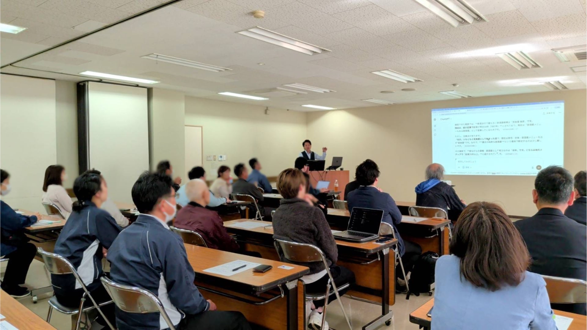
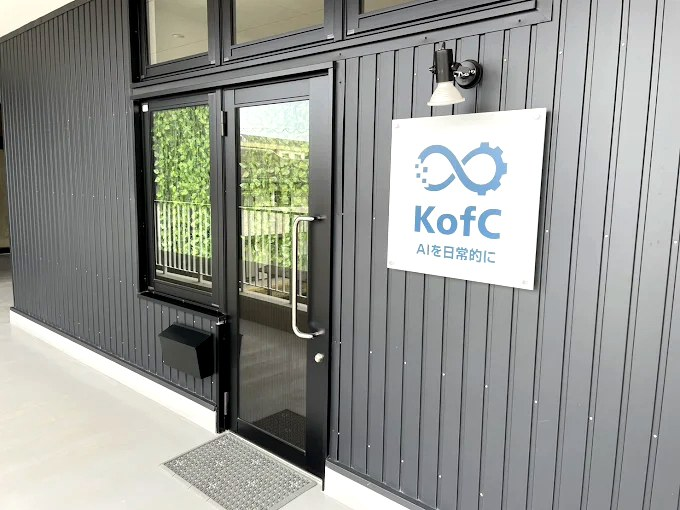
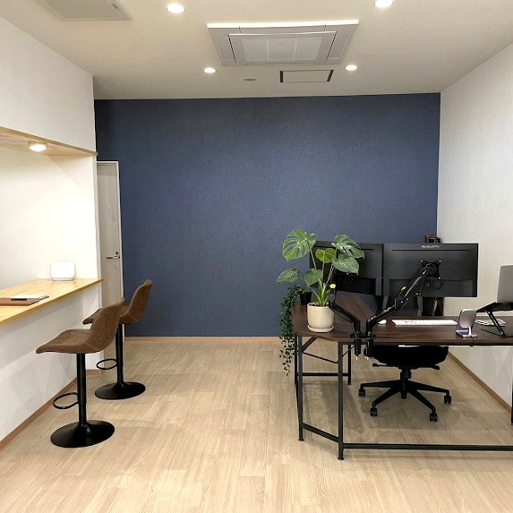

判断がいつも社長に集中
見積・請求の確認待ちで現場が止まる。社長が外せない。
新居浜・西条・四国中央の中小企業の社長へ
税理士法人出身 × 累計1,000名以上に研修・セミナー実施
紙・Excel・LINEに残る仕事を整理し、AIを配属する場所を決めます。まずは90日で、効果が見えやすい1つの業務から。
たとえば、こんな業務から減らせます:
Business Pain
紙・Excel・LINE・電話がバラバラに残り、同じ人の手元に集まり続けることが、止まらない原因です。製造・建設・卸売・運輸・農業・食品加工など、東予の主要業種すべてに対応します。
見積・請求の確認待ちで現場が止まる。社長が外せない。
勤怠・請求・帳票の集計に、月末だけ深夜まで残業が発生。
判断基準が言葉で残せていない。事務員が辞めると会社が止まる。
東予でも、AI導入企業との差は毎月開いている。
特に紙・Excel・LINE・電話・FAXがバラバラに残る、東予の従業員5〜50名の中小企業に、KofCは最も力を発揮します。 製造業・建設業・卸売小売業・運輸業など、現場が動いている会社ほど効果が出やすい設計です。
Why Now
「まだ早い」ではなく「今なら先行者になれる」。社長が決める会社から変わります。
製造業のAI導入は7.4%。今動いた会社が、向こう5年の地域標準を決めます。
DX成功企業の66%は、社長が言い出して始まりました。社員任せでは進みません。
50人以下の会社でも、85.9%が効果を実感。規模は理由になりません。
出典: 2025年版ものづくり白書（従業員規模別データ）
KofC Method
AIの使い方ではなく、AIの役割を決める。30/60/90日は全社導入の完了ではなく、まず1つの業務で小さな成功体験を作る期間です。
業務ヒアリング、AI配属診断、業務マッピングで、御社の仕事の流れを見える化します。
社内勉強会と実務型ハンズオン研修で、社員が自分の業務でAIを使える状態を作ります。
自動化設計と月次振り返りで、AIに任せる仕事を1つの業務プロセスに組み込みます。
Why KofC
月5.5万円のAI顧問を、東予の中小企業が選ぶ理由を5つに整理しました。
新居浜・西条・四国中央に絞り、月1回訪問で顔が見える距離感。大手では拾えない地元の業種・商習慣の癖まで踏まえて支援します。
研修後すぐ業務に活用、社内にAI活用文化を根付かせる。「学んで終わり」にしません。
AI顧問で導入後の改善・定着・最新技術の追加導入まで一貫支援。長期的な成長を支えます。
製造・建設・卸売・運輸・農業・食品加工など、業種ごとに業務の癖が違う。それぞれの現場で即運用できる形に設計します。
小さな成功体験を作ってから社内に展開。短期間で成果を実感しながら、リスクを最小限に抑えます。
Results
数字、お客様の言葉、業種別の改善実例の3つで、KofCの伴走の中身を見ていただけます。
AI顧問・AI研修・個別相談・自動化システム導入を含む累計。新居浜と県外企業が半数ずつ。
直近4/20新居浜セミナーは、商工会議所平均の約3倍。23社31名の参加企業から、個別相談6社が予約。
初級（基礎網羅）+ 中級（AIエージェント中心）、いずれもオフラインハンズオン型。
KofCのAI顧問は、月1回訪問・LINE随時相談の伴走型です。1社1社に深く入るため、新居浜市内中心に絞って支援しています。
研修受講者・個別相談ご利用者・継続支援先からいただいた感想です。
業務を大まかに話しただけで、すぐに業務改善のポイントを見つけ、的確なツールを提案してくださいました。今後も頼りにしています。
最初はAI講習で業務効率化に本当に繋がるのか半信半疑でしたが、10時間の講習で実際に使えるレベルまで到達できました。受講して本当によかったです。
理解するまで寄り添ってくださり、パソコンがあまり得意でない私にも分かりやすく教えてくださいました。とても助かりました。
AI研修の中で「業務分解の考え方」について教えていただいた部分は、今後の業務改善に向けて非常に勉強になりました。新しい視点を取り入れられたと感じています。
AIを使った業務効率化でお世話になりました。AIごとの特性を踏まえて、用途に合ったツールを提案していただけました。
AIとマーケティングの両方に精通されており、的確なアドバイスをいつもスピーディーにいただいています。代表の人間性も個人的に大好きで、自分の大切な取引先にも自信を持っておすすめできる方です。
AIツールの使い方から独自ツールの作成まで、知識が非常に豊富な印象です。さらに経営コンサルの視点もお持ちで、経営のボトルネックや改善ポイントについてもアドバイスをいただいています。非常に頼りになる存在です。
要望に応じたツールを作っていただき、問い合わせ対応のスピードが5倍になりました。業務効率が大きく上がり、売上向上のための時間も生まれています。今後ともよろしくお願いします。
顧客管理ツールを作っていただきました。これまで見えなかった部分が可視化され、管理が楽になり、事務負担がかなり減りました。非常に助かっています。引き続きよろしくお願いします。
東予の主要業種で、AIが実際に変えている業務の数字です。
※ 弊社実績及び中小企業のAI活用事例(書籍・公開研究より)。御社の業務内容により効果は異なります。
Seminar

Main Service
誰が、どの業務で、どこまで使うのか。ここを決める顧問です。
ヒアリング・配属診断の結果から、社内勉強会・AI研修(助成金75%補助対応)・自動化設計のどれに進むかを、一緒に決めます。
業種別の標準的なAI配属シナリオ（複数業務の合計）で試算しています。
| 業種 / 職種 | 削減できる業務時間 | 人件費換算 | 投資回収 |
|---|---|---|---|
| 製造業 / 営業・経理 | 月60時間 | 月12万円相当 ※ | 約2週間 |
| 建設業 / 現場担当 | 月160時間 | 月32万円相当 ※ | 約5日 |
| 卸小売業 / 事務・経理 | 月30時間 | 月6万円相当 ※ | 約4週間 |
| サービス業 / 接客・事務 | 月40時間 | 月8万円相当 ※ | 約3週間 |
※ 時給換算 2,000円ベース。実際の効果は業務内容・社員数により異なります。
どの業種も、月5.5万円の投資が1ヶ月以内に回収できる設計です。 1業務だけでなく、業務全体を見たうえでAIを配属するため、累積効果が大きく出ます。 その後は、削減効果がそのまま社員の余白（売上向上のための時間）に変わります。
Services
基本の進め方は「現状整理 → 小さく試す → 定着支援」ですが、研修から始めるか、AI顧問から始めるか、個別の自動化から始めるかは、会社の規模や状況に合わせて決めます。最初から大きく導入するのではなく、まずは効果が見えやすい1つの業務から始めます。
月1回訪問。成果を出す業務を一緒に決めます。
月5.5万円から
初級 or 中級・10時間ハンズオン型
新居浜中心に研修導入
勤怠、見積、請求、入金照合、帳票整理など。
初期11万円〜（要件により）
Price
主要サービスの目安です。
料金は最初から公開しています。問い合わせ後の見積でびっくりさせません。
| サービス | 料金目安 | 位置づけ |
|---|---|---|
| AI入門勉強会 | スポット 9.9万円 顧問契約先 5.5万円 （1社・2時間） |
まず社内でAIの景色を合わせる入口 |
| AI顧問 | 月5.5万円から | 月1回訪問と随時相談で定着支援 |
| AI研修（初級 or 中級） |
40万円 / 人・10時間
→
助成金活用で 実質10万円〜
|
ハンズオン型・人材開発支援助成金（事業展開等リスキリング支援コース）75%補助対応 |
| 業務自動化システム | 初期11万円〜（要件により） | 勤怠、見積、請求、入金照合など |
| システム保守 | 月0.5〜3.5万円 / システム | 稼働中のシステムを継続管理 |
Message
税理士法人勤務経験 / 現役経営コンサルタント / 累計1,000名以上に研修・セミナー実施 / 愛媛県新居浜市出身
株式会社KofCは、新居浜・西条・四国中央の中小企業向けAI導入支援です。ツール導入ではなく、仕事の流れを見て、AIを入れる場所を決めます。
代表の加藤は、新居浜で生まれ育ちました。税理士法人勤務を経て独立、現役の経営コンサルタント。同じ町の人間として、地元の経営者が人手不足や属人化と向き合いながら地域経済を回している姿を間近で見てきました。
AIは大企業のものではなく、地方の中小企業こそ早く使うべきです。だから新居浜・西条・四国中央に絞り、訪問頻度・対応速度・現場理解の深さを保ち続けています。まずは東予から、四国でAI活用率ナンバーワンの地域を作る。それが、KofCの目標です。
「この街で、弊社の仕事がなくなること。」
御社の中にAI活用が根づき、KofCに頼らなくても回るようになる。「卒業」を歓迎する伴走者でありたい。
FAQ
迷っているところがあれば、まずここで確認してください。
LINEと同じような画面でやり取りします。文字を打つだけです。社員平均年齢55歳の建設会社でも、3ヶ月後には現場担当者がAIに日報を整理させています。
正社員1名を雇うと、採用コスト30万 + 月給25万 + 社保・賞与・教育コストで実質月40万円以上です。AI顧問は月5.5万円、1日あたり1,800円。それで効果が出なければ翌月解約OKです。
新居浜市在住、税理士法人出身、現役の経営コンサルタント、大企業向けではなく中小特化、月単位解約可、代表が現場に来ます。月1回訪問が基本です（東予地区限定）。
30日でAIを入れる候補業務を整理し、60日で小さく試し、90日でまず1つの業務を自動化・半自動化することを目指します。全社導入を90日で完了させるのではなく、社内に広げるための最初の成功体験を作る期間です。
月1回訪問（東予地区）+ LINEで日々相談可能です。AI顧問は「卒業できる顧問」が目標です。御社の中にAI活用が根づいたら、契約を続ける理由は薄くなります。それが正しい状態です。
機密情報をいきなり入れる必要はありません。御社のリテラシーと運用に合わせて、安全な使い方から段階的に進めます。法人契約・データ学習させない設定で機密情報を扱える環境の整備、「何をAIに入れて良いか」の社内ルール作成、固有名詞を含まない業務からの試行 — この3つを一緒に進めます。最初の3ヶ月で「安全な使い方」を社内に揃えるところからスタートする企業が多いです。
他にも気になることがあれば、画面右下のAIかとうにお気軽にどうぞ。詳細なご相談はLINE公式から。
Office
事務所はこちらです。
お打ち合わせは、こちらでも、現場でも。
奥には研修室があり、AI研修も開催できます。


東予地区で50社以上の中小企業が、AIに触れ始めています。
初月解約OK・1日1,800円。それで効果が出なければ、やめてください。
LINE公式は24時間受付。深夜・休日のメッセージも、翌営業日にお返事します。
初回相談は30分。御社の現状を整理し、AI配属候補を洗い出します。売り込みは一切ありません。